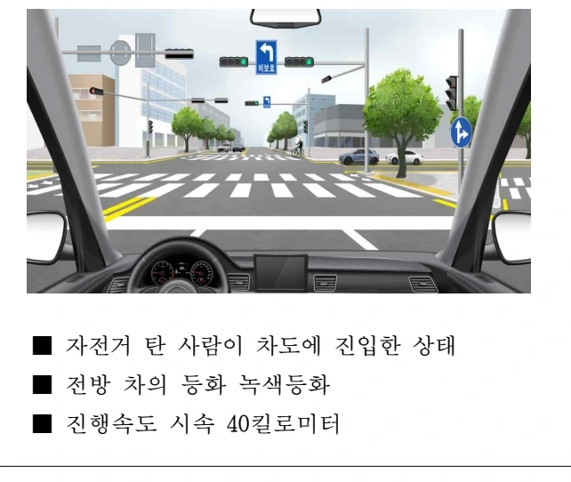

782. Hai cách điều khiển xe an toàn nhất trong tình huống sau là gì?

- ①Bật đèn pha cảnh báo người điều khiển xe đạp rồi nhanh chóng đi qua.
- ②Có khả năng người điều khiển xe đạp băng qua đường sai luật nên phải chú ý đi chậm.
- ③Vì xe đạp cũng là xe nên phỏng đoán xe đạp đã dừng ở vị trí hiện tại đó nên cứ thế băng qua đường giao nhau.
- ④Liên tục nhấn còi cảnh báo để người điều khiển xe đạp không thể có hành động nguy hiểm và nhanh chóng băng qua.
- ⑤Vì người điều khiển xe đạp đang ở dưới lòng đường nên đảm bảo khoảng cách an toàn và đi qua bên cạnh.
Xem đáp án
Đáp án
② Có khả năng người điều khiển xe đạp băng qua đường sai luật nên phải chú ý đi chậm.
⑤ Vì người điều khiển xe đạp đang ở dưới lòng đường nên đảm bảo khoảng cách an toàn và đi qua bên cạnh.
Căn cứ
Dự đoán rủi ro. Việc xử lý theo Luật Giao thông đường bộ không thể coi là vi phạm. Tuy nhiên, trong tình huống được đề cập, do không có ô tô, ngựa đi qua giao lộ nên khả năng cao người đi xe đạp sẽ đi ẩu mà không lường trước được sự lao vào của các ô tô khác. Ngoài ra, ngay cả khi không đi ẩu thì xe đạp đi qua nút giao nằm ở làn đường thứ 2 nên có thể nói phương pháp lái xe an toàn là người lái xe đi qua nút giao phải tạo khoảng trống an toàn bên hông xe đạp và lái xe chậm.
Phần căn cứ là bản dịch máy để tham khảo.